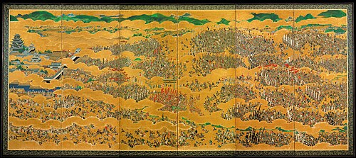

堺の町が碁盤の目になっている理由
15世紀から16世紀にかけて、堺は日本で最も栄えた海外貿易港でした。しかし、まさにその時代は戦国時代。日本各地で戦が起こり、多くの町が焼かれました。そんな中、堺では貿易で大きな富を得た商人たちが、町を守るために独自の防御策を講じました。町の西側は海に面し、残りの三方には濠（ほり）を築き、入口となる橋には門と門番を配置して、敵が侵入できないようにしたのです。この徹底した防御のおかげで、堺は平和な町としてますます繁栄し、その名は海外にまで知られるようになりました。この時の濠が、現在の土居川の始まりだと言われています。
しかし、その後日本を統一した豊臣秀吉は、この濠を埋め立ててしまいます。そして秀吉の死後、徳川の時代になった1615年の大坂夏の陣で、豊臣方が火を放ったため、堺は焼け野原になってしまいました。
そこで徳川幕府はすぐに堺の町を復興させました（これを「元和の町割」と呼びます）。この時、町は碁盤の目のように区画整理され、その周囲には再び濠が掘り直されました。これが今の土居川で、以前の濠よりも外側に掘られています。この川に「土居」という土の堤防を築いたことが、土居川という名前の由来とされています。

大坂夏の陣